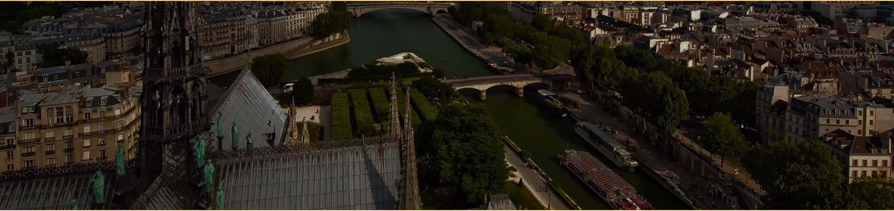
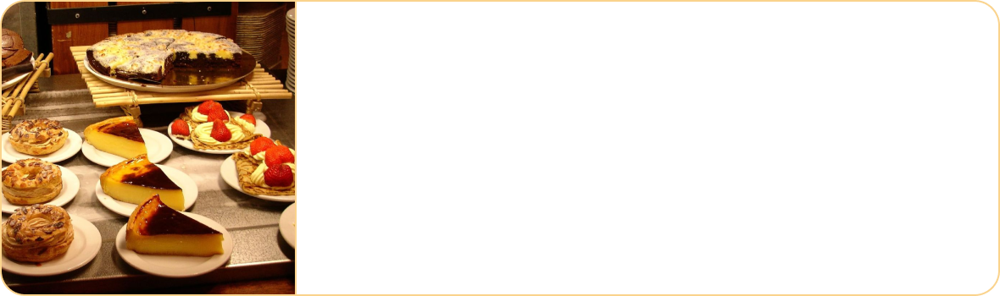
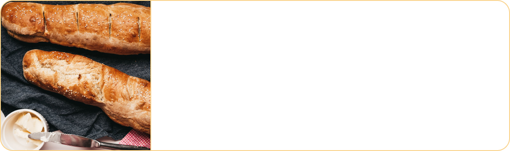
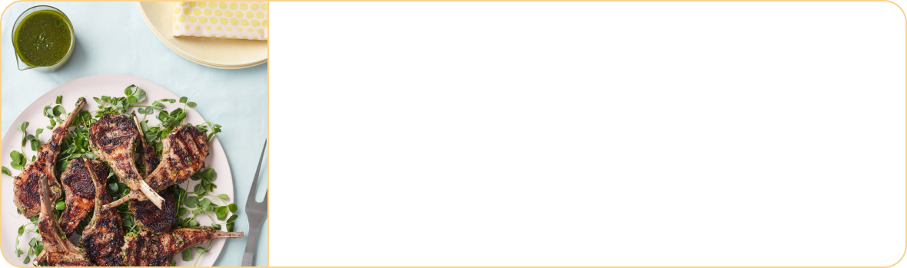
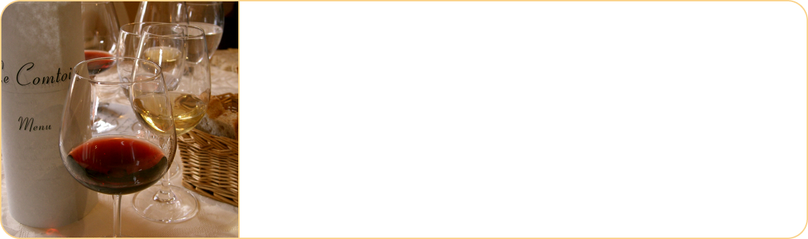
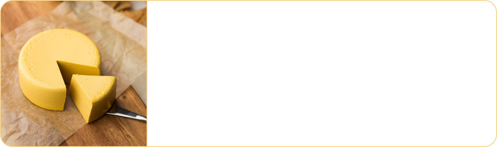
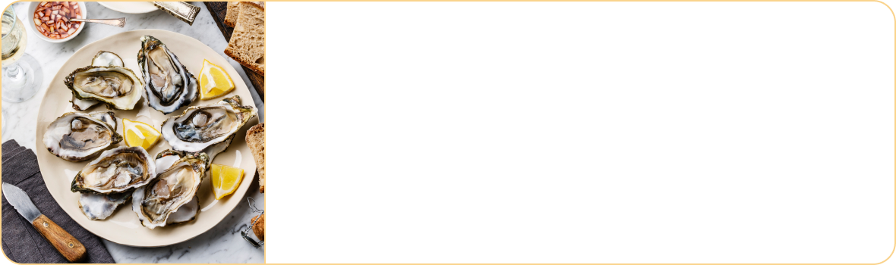

BLOG
Discover the uniqueness of French cuisine
French cuisine is famous all over the world for its fancy and exotic dishes, the unique combination of alcohol in processing and enjoying the dishes, contributing to deepening the flavor of French dishes. The French are very gourmet and are especially careful in eating, in the way of processing and in detail...

Foie gras – fatty foie gras
The French are also very proud of their unique fatty foie gras. People make this dish from geese that are cared for with a special diet to maximize the nutritional content of their liver. Fatty foie gras is processed into pâté and is available on the menus of high-class...
Desserts
The French are also world masters in the pastry industry with excellence in quality and a wide range of brands. A world of cakes ready to serve all customers' needs: fruit cake, banh cu, flan, chocolate cake, bread...
French bread
In France, bread is commonly used in daily meals.Accompanying this dish will be a glass of wine, responsible for awakening all the dishes. senses, is a source of energy, with paté, mayonnaise or a glass of hot chocolate at breakfast...
Grilled lamb chops
Along with potatoes, cherry cherry sauce and a little Porto wine, French grilled lamb chops always make diners unforgettable because of its unique taste. Lamb chops, after being preliminarily processed, marinated with spices, fried to the desired doneness...
French Wine
France is one of the European countries with the longest history of wine production. France considers wine to be a unique "highlight" in its culinary art. The wine distillation process is carried out with meticulous care to extract the most quintessential drops...
Cheese
France is considered the largest cheese consumer in the world. In France, there are more than 500 different flavored cheeses, mainly made from the milk of cows, sheep and goats. Roquefort blue cheese is famous for its strong aroma but easy to crush....
Raw oysters
Raw oysters, also known as huître, are a very popular dish in France. Oysters are seafood with high nutritional value, containing a lot of protein, vitamins, iron and other micronutrients. Oysters after opening...
CONTACT US
Hotln : +084 232 428 888
Email : lamantic04@gmail.com
Add 1 : 255 Minh Khai, Hai Ba Trung,Ha Noi
Add 2 : 84 Tang Bat Ho, Hai Ba Trung, Ha Noi

.png)
.png)